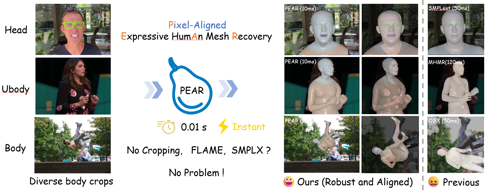
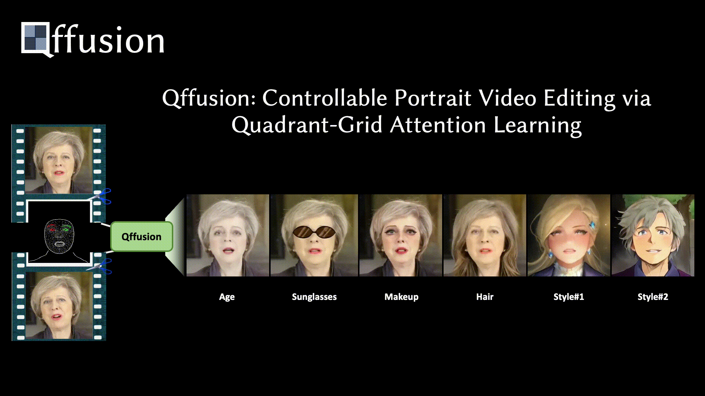
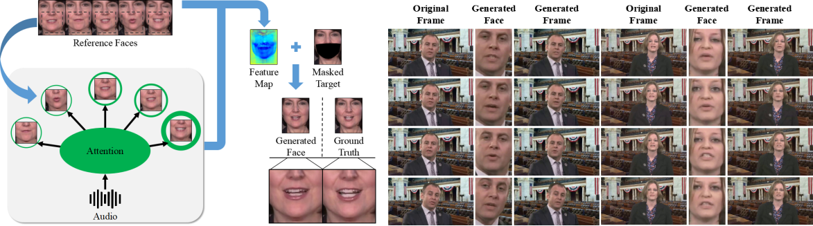
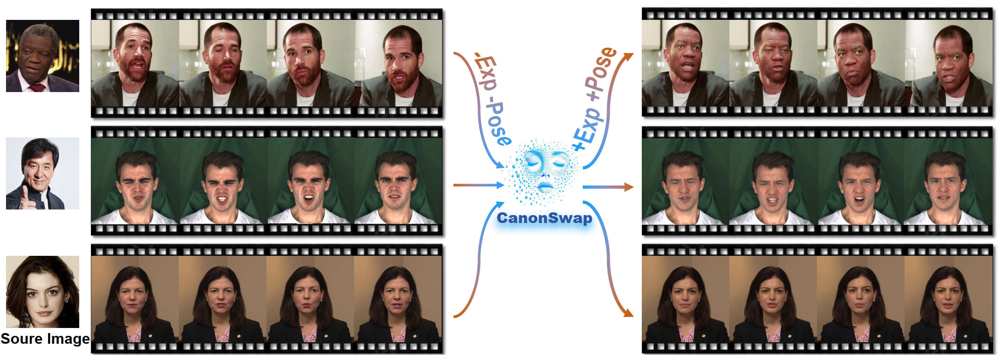
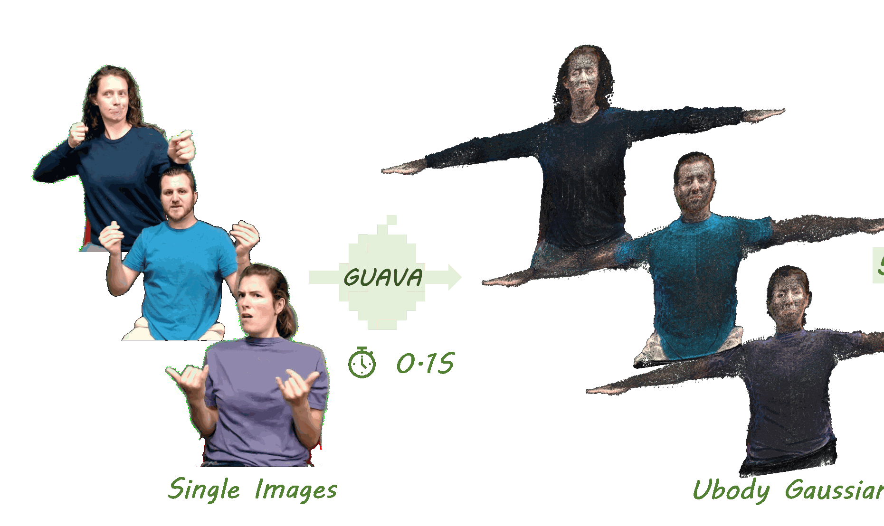
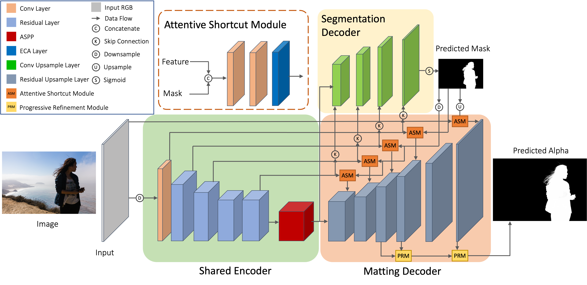
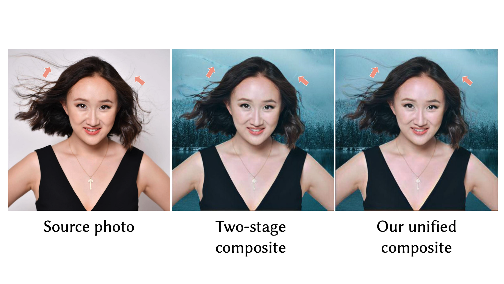
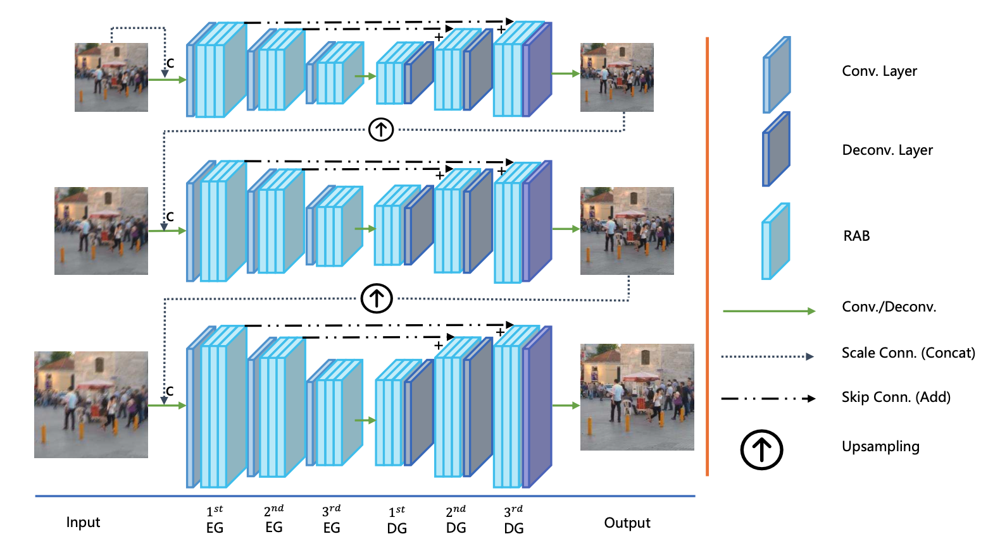
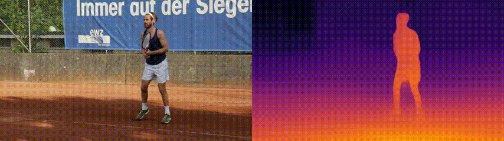

PEAR: Pixel-aligned Expressive humAn mesh Recovery
Pixel-aligned expressive human mesh recovery for high-fidelity dynamic human reconstruction.
I am currently a Researcher at International Digital Economy Academy (IDEA).
Previously, I received my bachelor's and master's degrees from South China University of Technology,
where I was advised by Prof. Yuhui Quan and
Prof. Yong Xu.
My research has evolved from image processing to image and video segmentation, then to AIGC generation and digital humans. My current interests focus on human-centric content understanding and generation, and their integration with embodied systems, including multimodal understanding and generation, humanoid robot motion tracking, reinforcement learning policy learning, and world models.
[2025.07] CanonSwap was accepted to ICCV 2025.
[2022.12] HWFI was published in IJCV 2022.
[2023.04] Joined IDEA as a Researcher.
[2023.04 - Present] Senior Researcher at International Digital Economy Academy (IDEA).
[2021.07 - 2023.04] Researcher at Tencent ARC Lab.
[2020.04 - 2021.06] Research Intern at Tencent ARC Lab.
My interests span low-level image processing, image and video segmentation, AIGC generation, digital humans, multimodal understanding and generation, and embodied intelligence including humanoid robot motion tracking, RL policies, and world models.
* equal contribution, # corresponding author

PEAR: Pixel-aligned Expressive humAn mesh Recovery
Pixel-aligned expressive human mesh recovery for high-fidelity dynamic human reconstruction.

Qffusion: Controllable Portrait Video Editing via Quadrant-Grid Attention Learning
Controllable portrait video editing with quadrant-grid attention for precise semantic manipulation.

Identity-Preserving Video Dubbing Using Motion Warping
Identity-preserving video dubbing with motion warping for expressive and temporally consistent speech transfer.

CanonSwap: High-Fidelity and Consistent Video Face Swapping via Canonical Space Modulation
Canonical-space modulation for high-fidelity and temporally consistent video face swapping.

GUAVA: Generalizable Upper Body 3D Gaussian Avatar
A generalizable 3D Gaussian avatar framework for upper-body human reconstruction and animation.
HRAvatar: High-Quality and Relightable Gaussian Head Avatar
A relightable Gaussian head avatar method for high-quality dynamic portrait reconstruction.

TEASER: Token Enhanced Spatial Modeling for Expressions Reconstruction
Token-enhanced spatial modeling for detailed and robust expression reconstruction.

Robust Human Matting via Semantic Guidance
Semantic guidance improves robustness in challenging human matting scenarios.

Composite photograph harmonization with complete background cues
Background-aware harmonization for realistic composite photograph editing.

HWFI: Hybrid Warping Fusion for Video Frame Interpolation
Hybrid warping fusion for accurate and temporally coherent video frame interpolation.

Attentive Deep Network for Blind Motion Deblurring on Dynamic Scenes
An attentive deep architecture for blind motion deblurring in dynamic scenes.

Enforcing Temporal Consistency in Video Depth Estimation
Temporal consistency constraints for stable and accurate video depth estimation.